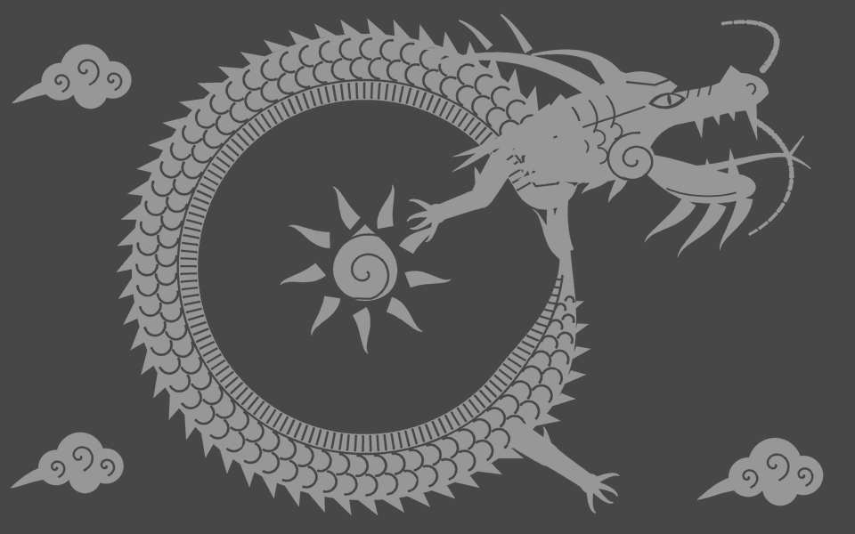
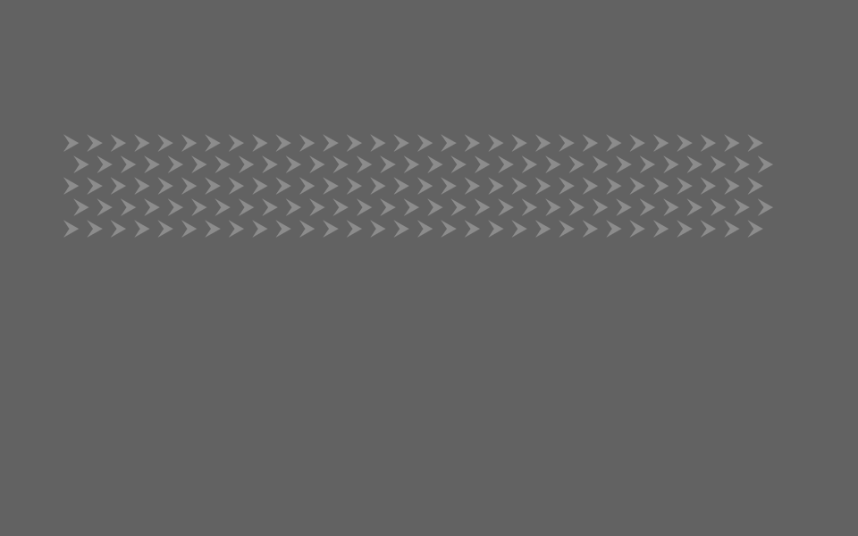
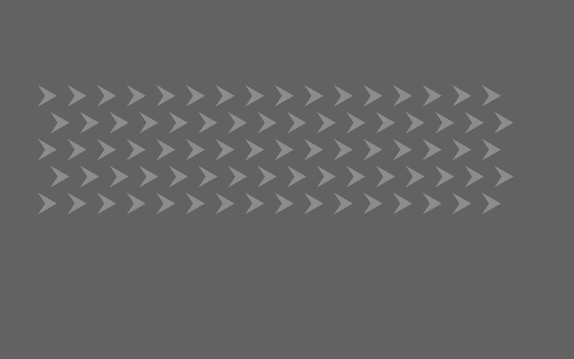
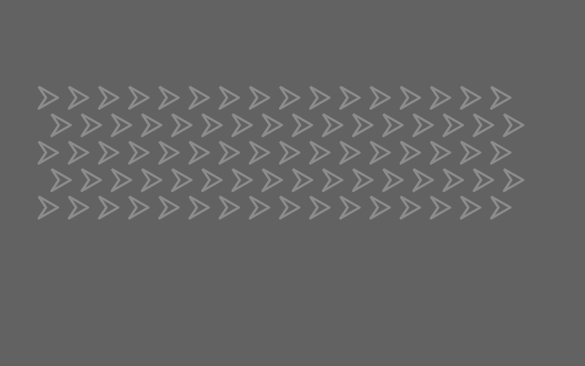

流れて見える鱗。動かない輪郭。変えているのは、線の位置ではなく明暗。再生して、あなたの目で確かめてください。

ペイントツールを開く →「ファイル」→「プロジェクトを開く」で、ダウンロードしたJSONを選択。レイヤーと動きを編集できます。ツール・作品・鱗パーツをまとめてダウンロード（ZIP）
三角や矢じりを元に、鱗を描く。太さと隙間で、流れの印象が変わります。
形を選択し、パス配置で反復。ベジェを曲げて、胴の流れを構成します。
胴には回転、ひげには別の方向。眼は静止したまま。作品を開いて設定を変えてみてください。
龍の錯視と、鱗を並べて作品を作る過程を20秒で紹介します。
比較用の3案です。同時再生はせず、一つずつ確認できます。

小さな単位で密度を作る。

輪郭と間隔を大きく取る。

中を抜き、内外に輪郭を作る。